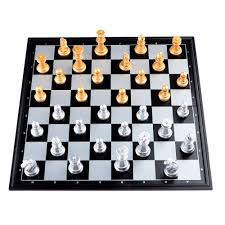

Plastic Chess Sets
o Try out our new plastic line of Chess Sets. Every plastic chess set is made from hand molds. We at Think-A-Head games are big supporters of environmental protection and have made the plastic molding of our chess sets as environmentally friendly as possible.
Wooden Chess Sets

o All woods used for our chess sets are responsibly sourced from local business tree farms. The wood is carefully sanded, treated and polished, to last for a long time. Our customers have a choice between two sets. The first, and most popular, are our Walnut and Maple sets. The Walnut wood makes up the Black squares and Black pieces. The Maple makes the White squares and White pieces. Our second type of Chess set is our rosewood set. Both colors of this side have more of a reddish hue. All of our chess sets are boarded in a yew wood finish.
Glass Chess Sets

We are so passionate about our work here at Think-A-Head Games that we have learned how to shape glass in Italy just to offer our customers a better product. One side of the board is made from a clear glass, while the other side is made from a smoky glass.

Stone Chess Sets
Our stone sets are made from finely polished Marble and Onyx. The Marble is sourced from Vermont USA. The polished Marble makes an excellent touch on the white pieces and squares of the board. The Onyx we use in these sets is imported from Canada. The Marble and Onyx is a personal favorite of ours at Think-A-Head games. For our special customers we will substitute the Marble White squares and pieces for green jade.
Ivory Chess Sets
Although the selling of elephant Ivory was not banned until mid 2016, We at Think-A-Head games discontinued the Ivory Chess set creation line back in 2010 because we felt that the sourcing of said ivory was inhumane. If it is an Ivory chess set what you truly desire, then you are welcome to take your business elsewhere.